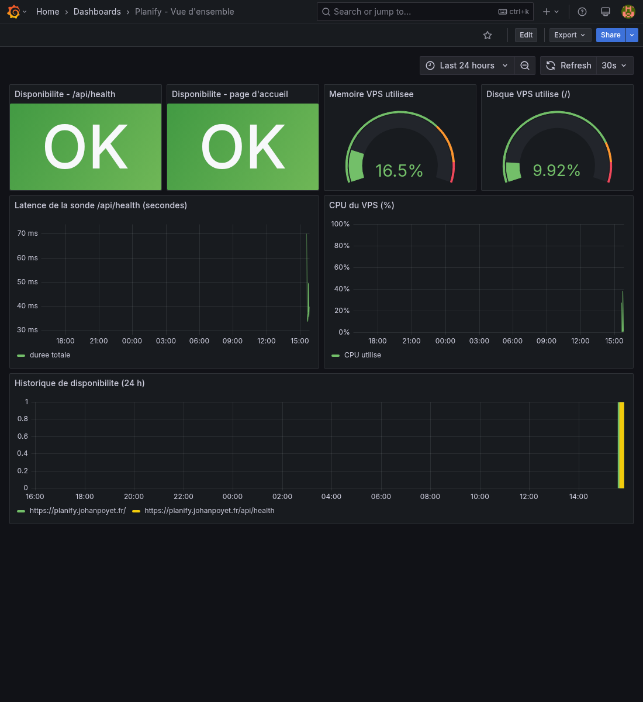
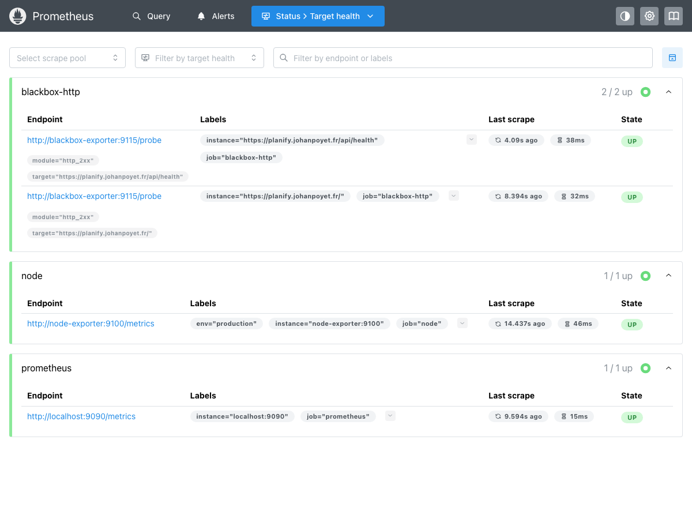
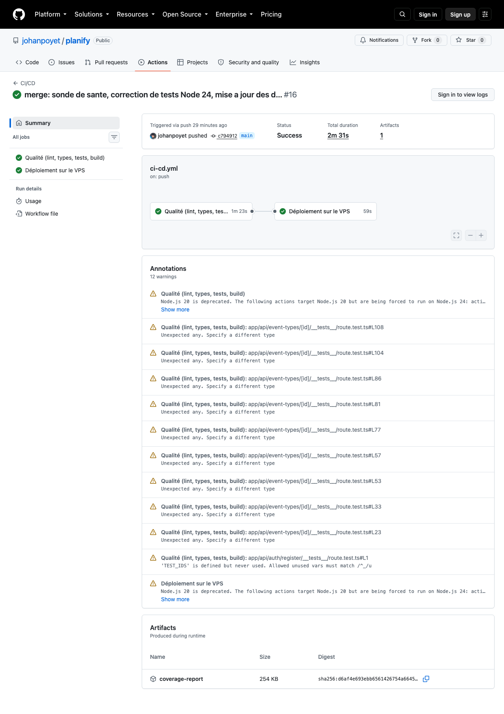

chore/deps-and-health-check), vérifiés localement puis fusionnés dans main le
18/08/2026 : le pipeline d'intégration continue les a validés une seconde fois avant leur déploiement réel
en production, décrit au chapitre 4.3.
Ce dossier couvre le BLOC 4 du titre RNCP 39583, "Maintenir l'application logicielle en condition opérationnelle", appliqué au même projet que le dossier BLOC 2 : Planify, une application web progressive de planification d'événements à calendrier partage entre amis. Je tiens seul, sur ce projet, le rôle de commanditaire, de développeur et d'exploitant : cette position, déjà assumée dans le dossier BLOC 2, explique la manière dont certaines compétences de ce bloc sont démontrées, en particulier la consignation des anomalies et la relation avec les utilisateurs, où je cumule les rôles habituellement répartis entre plusieurs personnes.
Le dossier BLOC 2 s'arrêtait le 22/07/2026, avec une application en production, un pipeline d'intégration et de déploiement continu, 316 tests conformes et vingt-cinq anomalies corrigées. Le présent dossier ne reprend pas ce travail : il documente l'activité de maintien en condition opérationnelle qui lui succède, avec ses propres mesures et sa propre date de référence. Entre le 22/07/2026 et le 18/08/2026, le projet a continué d'évoluer : correction de l'accès à la déconnexion sur mobile, ajout de l'affichage du mot de passe à l'inscription, renforcement de l'authentification. La préparation de ce dossier a été l'occasion d'un nouvel audit, qui a lui-même mis au jour une anomalie réelle, corrigée et documentée au fil des chapitres 3 et 4.
Chaque chapitre est rattaché à une compétence du BLOC 4, signalée par un repère C4.x.x.
Les mesures chiffrées proviennent de commandes exécutées sur le dépôt et sur le serveur de production le
18/08/2026 ; lorsqu'un élément attendu n'a pas pu être démontré, il est signalé comme tel plutôt que contourné.
Les modifications de code nécessaires à la démonstration de certaines compétences (sonde de supervision,
correction de tests, journal des versions) ont été développées sur une branche dédiée,
chore/deps-and-health-check, vérifiées par le pipeline, puis fusionnées dans main et
déployées en production le même jour.
Planify dépend de 17 paquets de production et de 12 paquets de développement (package.json).
Cette section décrit le processus suivi pour surveiller leurs nouvelles versions, évaluer l'impact d'une mise à
jour et l'intégrer sans casser l'application, puis l'illustre par une revue réelle menée le 18/08/2026.
| Étape | Description |
|---|---|
| Détection | npm outdated et npm audit exécutés lors de chaque
préparation de dossier professionnel et à la suite de toute alerte de sécurité publiée sur une dépendance
directe (Next.js, Prisma, NextAuth notamment, suivies individuellement du fait de leur exposition directe au
code applicatif). |
| Évaluation d'impact | Distinction entre version "wanted" (compatible avec les bornes
semver du package.json) et version "latest" (susceptible d'introduire une rupture) ; lecture du
journal des modifications de la dépendance concernée lorsque la mise à jour change un numéro de version
majeur. |
| Décision | Application immédiate si la mise à jour est mineure ou corrective et sans
rupture connue ; report documenté si elle impose une régression fonctionnelle (précédent : la suppression de
next-pwa plutôt que sa mise à jour, dossier BLOC 2, chapitre 6.2). |
| Application | npm audit fix pour les correctifs de sécurité sans
changement cassant, ou modification manuelle du package.json suivie de npm ci pour
une installation reproductible à partir du verrou de version. |
| Vérification | Rejeu complet de la chaîne de qualité locale (lint,
typecheck, vitest run --coverage, next build) avant tout commit, puis
vérification par le pipeline CI/CD dès lors que la modification est poussée. |
Le périmètre logiciel concerné est priorisé : les dépendances de production (dependencies), qui
s'exécutent dans l'application livrée, sont revues en priorité ; les dépendances de développement
(devDependencies) sont revues ensuite, avec une tolérance plus large car elles n'atteignent jamais
l'environnement de production. Le type de mise à jour est aujourd'hui manuel : chaque revue est déclenchée et
validée par le développeur, sans fusion automatique. Aucun outil d'automatisation des demandes de mise à jour
(Dependabot ou équivalent) n'est encore configuré ; ce point est repris comme axe d'amélioration au chapitre 5.
Une installation reproductible (npm ci) et un audit ont été exécutés le 18/08/2026, avec
Node.js 24.19.0 :
$ npm ci added 431 packages, and audited 432 packages in 8s 10 high severity vulnerabilities $ npm outdated Package Current Wanted Latest Location @prisma/client 6.18.0 6.19.3 7.9.1 node_modules/@prisma/client next 16.2.11 16.3.1 16.3.1 node_modules/next prisma 6.19.3 6.19.3 7.9.1 node_modules/prisma typescript 5.9.3 5.9.3 7.0.2 node_modules/typescript (...)
Sortie complète en annexe A. 21 paquets disposent d'une version "wanted" ou "latest" plus récente ; aucun n'impose de mise à jour immédiate (aucune faille critique, aucune fin de support annoncée).
L'audit a signalé dix vulnérabilités de sévérité élevée. Neuf provenaient de paquets pouvant être corrigés sans
rupture (brace-expansion, js-yaml, nanoid, postcss,
sharp, undici) : elles ont été appliquées avec npm audit fix. La
dixième provient de deepmerge-ts, dépendance transitive de l'outillage Prisma
(@prisma/config) : le seul correctif proposé rétrograderait Prisma vers la version 6.12.0, une
régression comparable à celle déjà écartée pour Next.js dans le dossier BLOC 2. Il n'a pas été appliqué ; le
suivi est reporté au chapitre 5.
| État | Critiques | Élevées | Total | Commande |
|---|---|---|---|---|
| Avant traitement (18/08/2026) | 0 | 10 | 10 | npm audit |
Après npm audit fix | 0 | 3 | 3 |
Les trois vulnérabilités résiduelles proviennent toutes de la même chaîne de dépendances
(deepmerge-ts vers @prisma/config vers prisma) : elles comptent pour
trois lignes dans le rapport npm audit mais correspondent à un seul correctif écarté.
package.json.
Planify s'exécute en instance unique (PM2, mode fork) derrière un proxy inverse Nginx, avec une base MongoDB distincte, sur un VPS qui héberge par ailleurs une seconde application sans lien avec Planify. Cette typologie, déjà décrite au dossier BLOC 2, oriente le système de supervision vers trois niveaux complémentaires : la surveillance du processus lui-même (déjà en place), une sonde applicative interne, et une pile de supervision externe au processus, installée le 18/08/2026, qui observe l'application depuis l'extérieur comme le ferait un navigateur.
| Sonde | Périmètre surveillé | Méthode | État |
|---|---|---|---|
| PM2 (processus) | Présence du processus Node.js, consommation mémoire. | Redémarrage automatique si le processus s'arrête ; plafond mémoire configuré à 400 Mo
(ecosystem.config.js). | En place (BLOC 2) |
GET /api/health (applicatif) | Réponse effective de l'application et joignabilité de la base de données. | Requête de comptage sur la collection des utilisateurs via Prisma ;
code 200 et db: "up" si la base répond, code 503 et db: "down" sinon, avec le temps
de réponse mesuré. | Déployée en production le 18/08/2026 |
Journal de sécurité (canal SECURITY) | Tentatives d'authentification anormales : échecs répétés, blocages. | Événements structurés écrits sur la sortie d'erreur, collectés par PM2, filtrables par préfixe (dossier BLOC 2, chapitre 6). | En place (BLOC 2) |
| blackbox-exporter (sonde HTTPS) | Disponibilité de la page d'accueil et de
/api/health, vues depuis l'extérieur du processus applicatif. | Requête HTTPS toutes les 15 secondes vers les deux URL publiques ; DNS, certificat TLS et réponse HTTP traversés à chaque mesure. | Installée le 18/08/2026 |
| node-exporter | CPU, mémoire, disque du VPS. | Anticiper une saturation qui casserait Planify sans qu'aucune sonde applicative ne le signale. | Installée le 18/08/2026 |
Le contrôle est auto-hébergé plutôt que confié à un service tiers payant : Prometheus, node-exporter,
blackbox-exporter et Grafana tournent dans quatre conteneurs Docker dédiés
(docker-compose.yml et le dossier monitoring/, versionnés sur le VPS), séparés du
processus PM2 qui sert Planify. La sonde blackbox-exporter interroge les URL publiques par HTTPS,
et non les conteneurs en interne : elle traverse donc la même résolution DNS, le même certificat et le même
chemin réseau qu'un utilisateur réel, à ceci près qu'elle part du même serveur plutôt que d'un point du réseau
géographiquement distinct ; c'est la limite assumée de ce choix, reprise au chapitre 5.
La route GET /api/health ne nécessite pas d'authentification, afin de rester interrogeable par un
contrôle externe. Elle vérifie à la fois que le processus répond et que la base de données est joignable, ce
qui la distingue d'un simple ping de processus : une page qui répond en HTTP 200 ne garantit pas que
l'application soit utilisable, comme l'a montré l'anomalie BUG-20 du dossier BLOC 2, où la page de connexion
répondait normalement alors que ses ressources statiques étaient refusées par le serveur.
// app/api/health/route.ts
export async function GET() {
const start = Date.now();
try {
await prisma.user.count();
return NextResponse.json({
status: 'ok', db: 'up',
uptimeSeconds: Math.round(process.uptime()),
latencyMs: Date.now() - start,
timestamp: new Date().toISOString(),
});
} catch (error) {
return NextResponse.json(
{ status: 'degraded', db: 'down', uptimeSeconds: Math.round(process.uptime()),
timestamp: new Date().toISOString() },
{ status: 503 }
);
}
}
Vérification du 18/08/2026 : le serveur de production compile a été démarré localement sans base de données configurée, afin de vérifier que la sonde détecte correctement une base injoignable plutôt que de renvoyer un faux positif.
$ curl -sS -w "\nHTTP_STATUS:%{http_code}\n" http://localhost:3010/api/health
{"status":"degraded","db":"down","uptimeSeconds":5,"timestamp":"2026-08-18T09:31:31.560Z"}
HTTP_STATUS:503
La sonde renvoie le code et le contenu attendus dès que la base est injoignable, ce qui la rend exploitable par un contrôle externe programmable sur un simple code de réponse. Deux tests automatisés couvrent les deux cas (base joignable et injoignable) ; ils font partie de la suite exécutée par le pipeline.
Les quatre sondes alimentent un tableau de bord unique, provisionné par fichier plutôt que construit à la
souris (grafana/provisioning/dashboards/planify-overview.json), reconstructible à l'identique en
cas de réinstallation du VPS. Il réunit la disponibilité vue de l'extérieur, la latence de la sonde
applicative et la charge du serveur, afin qu'un seul écran réponde à la question "est-ce que tout va bien ?".

/api/health en production : disponibilité de la page d'accueil et de
l'API de santé, mémoire et disque du VPS, latence de la sonde, historique de disponibilité sur 24 heures. La
courbe d'historique n'affiche qu'un point : la pile de supervision vient d'être installée et n'a pas encore
accumulé de recul, ce qui est signalé comme limite au chapitre 5 plutôt que présenté comme un historique
complet.
blackbox-http sur les deux URL publiques, node, prometheus lui-même)
sont à l'état UP, avec l'horodatage du dernier passage de sonde et sa durée. C'est la preuve que les sondes
décrites au tableau du chapitre 2.1 fonctionnent réellement, et pas seulement sur le papier.| Critère | Objectif | Source |
|---|---|---|
Disponibilité HTTP de /api/health et de la page d'accueil | Code 200, vu depuis l'extérieur du processus | blackbox-exporter, toutes les 15 s |
| Latence de la sonde | Quelques dizaines de millisecondes, une requête de comptage simple ne justifiant pas de délai notable | Champ latencyMs de la réponse et métrique
probe_duration_seconds |
| Consommation mémoire du VPS | Sous le seuil d'alerte pour ne pas dégrader Planify et les autres services hébergés | node-exporter |
| Espace disque du VPS | Marge suffisante pour les journaux et la rétention Prometheus (15 jours) | node-exporter |
| Tentatives d'authentification anormales | Blocage effectif au-delà de cinq échecs | Journal SECURITY |
Deux modalités coexistent. La première est corrective et automatique : PM2 redémarre le processus en cas
d'arrêt ou de dépassement mémoire, sans intervention humaine. La seconde est désormais visuelle : le tableau
de bord du chapitre 2.3 rend la disponibilité et la charge consultables en un coup d'oeil, là où seule une
requête manuelle à /api/health le permettait auparavant. Une alerte poussée automatiquement
(règle Grafana déclenchée par probe_success, notifiée sur un canal Discord dédié) reste à
raccorder : c'est la limite qui subsiste sur ce dispositif, reprise au chapitre 5, et la seule étape qui
sépare aujourd'hui la supervision passive de l'alerte proactive.
Le projet étant maintenu par une seule personne, la consignation ne s'appuie pas sur un outil de ticketing partagé, mais sur un registre versionné dans le dépôt (à l'image de l'annexe D du dossier BLOC 2), alimenté par quatre canaux de détection : la recette manuelle, l'exécution du pipeline d'intégration continue, l'usage en production, et désormais la sonde de supervision décrite au chapitre 2.
| Canal de détection | Nature des anomalies typiquement trouvées |
|---|---|
| Recette manuelle | Écarts fonctionnels et d'accessibilité, visibles à l'usage. |
| Pipeline CI/CD (lint, types, tests, build) | Régressions de code, tests cassés, erreurs de compilation. |
Sonde /api/health et journaux PM2 | Indisponibilité de la base de données, dépassement mémoire, erreurs d'exécution en production. |
| Usage en production | Comportements invisibles en développement (fuseau horaire, droits de fichiers, charge réelle). |
Chaque anomalie consignée suit une fiche unique, qui rassemble les informations nécessaires à sa reproduction avant même d'engager la correction : environnement précis, commande exécutée, résultat attendu et résultat observé, gravité, et élément de preuve joint (trace de pile, capture, sortie de commande).
| Référence | ANOM-2026-08-18-01 |
| Titre | Deux tests de la route de photo de profil échouent après mise à jour de Node.js |
| Date et contexte de détection | 18/08/2026, lors de la revue de la suite de tests menée en préparation de ce dossier. |
| Environnement | Poste de développement, Node.js 24.19.0 (npm 11.17.0), Vitest 4.1.10, environnement de test jsdom 28.1.0. Le même dépôt, sur Node.js 22.20.0, ne présentait pas cette anomalie lors de l'audit du 22/07/2026 (dossier BLOC 2, chapitre 5.4 : 316/316 tests conformes). |
| Gravité | Majeure : le pipeline exécute vitest run --coverage comme
étape bloquante de la tâche quality ; deux tests en échec auraient empêché tout déploiement tant
que la barrière de qualité n'est pas franchie. |
| Étapes de reproduction |
npm ci (installation reproductible) puisnpx vitest run app/api/user/profile-image/__tests__/route.test.ts --reporter=verbose
|
| Résultat attendu | Neuf tests conformes (quatre cas de rejet, deux cas de succès, trois tests de suppression). |
| Résultat observé | Sept tests conformes, deux en échec : "devrait retourner 400 si type de fichier invalide" et "devrait uploader une image valide", tous deux avec un code de réponse 500 au lieu du code attendu. |
| Élément joint | Trace de pile obtenue via la sortie d'erreur de la route :
AssertionError [ERR_ASSERTION]: The expression evaluated to a falsy value:
assert(typeof value === "string" && webidl.is.USVString(value) || webidl.is.File(value))
at multipartFormDataParser (node:internal/deps/undici/undici:6526:9)
|
| Cause probable (à la consignation) | Incompatibilité entre le constructeur
File fourni par l'environnement de test jsdom et le contrôle interne de type effectué par
l'analyseur multipart d'undici, intégré à Node.js 24 et sollicité par NextRequest pour reconstituer
un formulaire envoyé en corps de requête. À confirmer par analyse (chapitre 4). |
Cette fiche est reprise, complétée par l'analyse de cause racine et la correction apportée, au chapitre suivant.
L'hypothèse formulée à la consignation s'est confirmée, et s'est avérée plus étendue que prévu. Une
reproduction isolée a montré que la propriété type du fichier transmis, correctement définie à la
construction, redevenait undefined après avoir transité par un FormData sérialisé
puis réanalysé par NextRequest dans l'environnement de test jsdom, alors que la même séquence hors
jsdom (script Node autonome) préservait fidèlement cette valeur. Le fichier existant
app/api/user/profile-image/__tests__/route.test.ts documentait déjà un symptôme voisin sur la
propriété size, dans un commentaire du test vérifiant le rejet des fichiers trop volumineux : "la
sérialisation multipart de jsdom ne conserve pas la taille du fichier". La régression du 18/08/2026 est donc la
manifestation, sur deux tests supplémentaires, d'une limite déjà connue de l'environnement de test, révélée ici
par la montée de version de Node.js plutôt que par un changement du code applicatif : la route
app/api/user/profile-image/route.ts elle-même n'a pas été modifiée.
Les deux tests concernés ont été alignés sur le contournement déjà établi dans le même fichier : fournir
directement un objet imitant l'interface attendue par la route plutôt que de passer par un
FormData sérialisé.
// avant (échoue sous Node 24 + jsdom)
const formData = new FormData();
const file = new File(['content'], 'test.txt', { type: 'text/plain' });
formData.append('image', file);
const request = new NextRequest(url, { method: 'POST', body: formData });
// après
const file = { name: 'test.txt', type: 'text/plain', size: 7 } as unknown as File;
const request = { formData: async () => ({ get: () => file }) } as unknown as NextRequest;
Pour le test de téléversement valide, la route appelant file.arrayBuffer() afin d'écrire le
contenu sur disque, l'objet substitué expose cette méthode explicitement, évitant de réintroduire une
dépendance à la sérialisation défaillante.
Conformément au protocole décrit au dossier BLOC 2 (chapitre 4), le correctif n'a pas été appliqué directement
sur main. Il a été commité sur une branche dédiée, chore/deps-and-health-check,
créée à partir de main, puis poussée vers le dépôt distant. Le pipeline se déclenche sur chaque
push, quelle que soit la branche : la tâche quality (analyse statique, vérification de types,
tests avec couverture, build) s'est donc exécutée réellement sur GitHub Actions dès la publication de la
branche, sans toucher à main ni déclencher de déploiement, la tâche deploy étant
subordonnée à la fois à la réussite de quality et à un évènement sur main.
Exécution réelle du pipeline, consultable à
github.com/johanpoyet/planify/actions/runs/32121787991 :
| Tâche | Résultat | Horaire (UTC) |
|---|---|---|
| Qualité (lint, types, tests, build) | Succès | 09:28:37 -> 09:30:01 (1 min 24 s) |
| Déploiement sur le VPS | Ignorée (skipped) | Conditionnée à main, non remplie sur cette branche |
Relevé le 18/08/2026 via l'API GitHub (GET /repos/johanpoyet/planify/actions/runs).
Le détail des neuf étapes de la tâche qualité (récupération du code, installation, génération du client
Prisma, ESLint, TypeScript, tests, publication de la couverture, build) figure en annexe A.
La branche a ensuite été fusionnée dans main le même jour, une fois la mise en place de la
supervision du chapitre 2 terminée et vérifiée. Cette fusion a déclenché une seconde exécution du pipeline,
cette fois avec la tâche deploy active :
| Tâche | Résultat |
|---|---|
| Qualité (lint, types, tests, build) | Succès |
| Déploiement sur le VPS | Succès |
Run 32143320615, déclenché par le commit de fusion sur main, relevé
le 18/08/2026.

32143320615 : les deux tâches en succès, durée
totale de 2 min 31 s (qualité 1 min 23 s, déploiement 59 s), déclenché par le commit de fusion sur
main. Les douze avertissements listés sont sans lien avec ce dossier (types any
dans des tests existants, dépréciation de Node.js 20 dans les actions GitHub) ; ils n'ont pas empêché la
réussite du déploiement.Vérification immédiate après déploiement, sur l'application réellement en ligne :
$ curl -s https://planify.johanpoyet.fr/api/health
{"status":"ok","db":"up","uptimeSeconds":19,"latencyMs":8,"timestamp":"2026-08-18T13:39:01.757Z"}
Le processus PM2 a redémarré proprement (uptimeSeconds: 19 au moment du relevé,
mémoire retombée à 68 Mo), la page de connexion et la page d'accueil ont été revérifiées en HTTP 200, et les
journaux PM2 ne comportent aucune erreur nouvelle après le rechargement.
Cette exécution a été précédée, à chaque commit, du rejeu local de la même chaîne de qualité :
| Étape | Commande | Résultat |
|---|---|---|
| Analyse statique | npm run lint | 0 erreur, 447 avertissements |
| Vérification de types | npm run typecheck | 0 erreur |
| Tests avec couverture | npx vitest run --coverage | 46/46 fichiers, 328/328 tests |
| Build de production | npx next build | Succès |
Exécutions locales du 18/08/2026, après application du correctif et des autres modifications de ce dossier (sonde de santé, mise à jour des dépendances). Le détail par étape figure en annexe A.
Le scénario d'origine (chapitre 3.2) a été rejoué après correction :
$ npx vitest run app/api/user/profile-image/__tests__/route.test.ts --reporter=verbose
✓ devrait retourner 401 si non authentifie
✓ devrait retourner 404 si utilisateur introuvable
✓ devrait retourner 400 si aucune image fournie
✓ devrait retourner 400 si type de fichier invalide
✓ devrait retourner 400 si fichier trop volumineux
✓ devrait uploader une image valide
✓ devrait retourner 401 si non authentifie (DELETE)
✓ devrait retourner 404 si utilisateur introuvable (DELETE)
✓ devrait supprimer la photo de profil
Test Files 1 passed (1)
Tests 9 passed (9)
Les neuf tests du fichier concerné sont conformes, et la suite complète est passée de 326 à 328 tests conformes
(les deux tests ajoutés couvrent la nouvelle sonde /api/health, chapitre 2). Le traitement de
cette anomalie illustre directement l'apport du processus d'intégration continue décrit au dossier BLOC 2 :
sans l'étape vitest run --coverage rendue bloquante lors de la refonte du pipeline, cette
régression aurait pu atteindre main, puis la production, dès la prochaine mise à jour de
l'environnement d'exécution.
Les recommandations ci-dessous prennent appui sur les indicateurs mesurés dans ce dossier et dans le dossier BLOC 2 : elles visent à réduire une charge de maintenance manuelle qui repose aujourd'hui sur un seul développeur, et à transformer des contrôles passifs (mesures à la demande) en contrôles actifs (alertes).
| Recommandation | Argumentaire et gain attendu | Coût et délai de mise en oeuvre |
|---|---|---|
Rendre npm audit bloquant dans le pipeline |
Aujourd'hui exécuté manuellement (chapitre 1), l'audit peut être ignoré par simple oubli. Le rendre bloquant sur les vulnérabilités critiques empêche une régression de sécurité silencieuse, sans ralentir le développement courant : sur les dix vulnérabilités relevées le 18/08/2026, neuf étaient corrigeables sans intervention humaine. | Faible : une étape supplémentaire dans .github/workflows/ci-cd.yml (npm audit
--audit-level=critical), quelques minutes de configuration. |
| Automatiser la veille des dépendances (Dependabot ou équivalent) | Le processus décrit au chapitre 1 reste manuel : la revue dépend de la disponibilité du développeur. Un outil natif au dépôt ouvrirait automatiquement une proposition de mise à jour dès qu'une version corrective est publiée, réduisant le délai entre publication d'un correctif et son intégration. | Faible : fonctionnalité native de GitHub, activable sans développement, à configurer avec un rythme hebdomadaire pour rester compatible avec une revue par une seule personne. |
Raccorder une alerte active sur la sonde blackbox-exporter |
Le chapitre 2 installe la sonde et le tableau de bord, mais la disponibilité n'y est encore que consultée,
pas signalée. Une règle Grafana sur probe_success, notifiant un webhook Discord, transformerait
une indisponibilité en alerte immédiate plutôt qu'en constat a posteriori, évitant qu'elle ne soit découverte
que par un utilisateur, comme cela avait été le cas pour l'anomalie BUG-20 du dossier BLOC 2. |
Très faible : la règle et le contact Discord se configurent dans Grafana, déjà installé ; moins de trente minutes. |
| Diversifier géographiquement la sonde de disponibilité | La sonde blackbox-exporter installée au chapitre 2 part du même serveur que l'application :
elle valide DNS, TLS et la réponse HTTP, mais ne détecterait pas une panne réseau propre à cet hébergeur.
Ajouter un point de contrôle externe (service gratuit type UptimeRobot) couvrirait ce cas résiduel. |
Très faible : création d'un compte externe (action à réaliser personnellement) et configuration d'un moniteur pointant vers l'URL publique de la sonde ; moins de trente minutes. |
Activer la protection de la branche main |
Déjà identifiée comme limite au dossier BLOC 2 : la barrière de qualité repose uniquement sur l'enchaînement des tâches du pipeline, sans règle de dépôt interdisant la fusion en cas d'échec. L'activer supprime une fenêtre d'erreur humaine possible. | Nul en développement : réglage dans les paramètres du dépôt GitHub, sans modification de code. |
| Synchronisation avec un calendrier externe (format iCal) | Déjà envisagée en conclusion du dossier BLOC 2. Elle répond à un besoin réel signalé par un utilisateur (chapitre 7) : pouvoir retrouver les événements de Planify dans l'agenda déjà utilisé au quotidien, ce qui renforce l'attractivité du produit sans en changer le cœur fonctionnel. | Modéré : génération d'un flux .ics par utilisateur, alimenté par les événements et
invitations acceptées ; estimée à quelques jours de développement et de tests, hors périmètre de ce dossier. |
Ces cinq recommandations sont classées par coût croissant. Les trois premières sont directement réalisables à partir du travail présenté dans ce dossier et ne demandent aucune négociation de périmètre fonctionnel ; la quatrième est un simple réglage ; la dernière, plus conséquente, relève d'une décision produit et n'a pas été engagée ici.
Le dossier BLOC 2 notait l'absence d'étiquette de version dans l'historique Git comme limite. Un journal des versions, au format CHANGELOG.md, a été créé le 18/08/2026 et versé au
dépôt sur la branche chore/deps-and-health-check, accompagné de deux étiquettes Git annotées
posées localement : v1.0.0, sur le commit de référence du dossier BLOC 2
(4103963, 22/07/2026), et v1.1.0, sur l'état du dépôt à l'issue des travaux décrits
dans ce dossier.
# Journal des versions ## [1.1.0] - 2026-08-18 Version de maintenance corrective, préparée dans le cadre de l'audit du dossier professionnel BLOC 4. ### Ajouté - Sonde de disponibilité GET /api/health : vérifie que le processus applicatif répond et que la base MongoDB est joignable, avec temps de réponse et durée de fonctionnement. ### Corrigé - Deux tests de la route app/api/user/profile-image échouaient depuis la mise à jour de l'environnement de développement vers Node.js 24 (incompatibilité jsdom / analyseur multipart d'undici). Tests réécrits. ### Sécurité - Neuf vulnérabilités de sévérité élevée corrigées via npm audit fix, sans changement cassant. Trois subsistent, héritées de l'outillage Prisma ; leur correction automatique imposerait une régression de Prisma vers la 6.12.0, non appliquée. ## [1.0.0] - 2026-07-22 Version de référence du dossier professionnel BLOC 2, après la refonte de l'interface et la mise en place de la chaîne de qualité. (...)
Le fichier complet, incluant la version 1.0.0 et la période antérieure non versionnée, figure
au dépôt sous CHANGELOG.md et en annexe A.
| Version | Correctif | Référence |
|---|---|---|
| 1.1.0 | Deux tests cassés par la montée de version de Node.js, corrigés | ANOM-2026-08-18-01 (chapitres 3 et 4) |
| 1.1.0 | Neuf vulnérabilités de dépendances corrigées | Chapitre 1.2 |
| 1.0.0 | Vingt-cinq anomalies corrigées (sécurité, accessibilité, fiabilité des tests, exploitation, fonctionnel) | Dossier BLOC 2, annexe D |
$ git tag -l -n1
v1.0.0 Version de reference du dossier professionnel BLOC 2 (22/07/2026)
v1.1.0 Maintenance corrective : sonde /api/health, correction des tests Node 24,
mise a jour des dependances vulnerables (18/08/2026)
Ces étiquettes ont été poussées vers le dépôt distant (git push --tags) le 18/08/2026 et sont
visibles sur GitHub, aux côtés de la branche chore/deps-and-health-check fusionnée dans
main le même jour.
Planify n'a pas d'équipe support au sens où l'entend habituellement ce critère : le projet est maintenu par une seule personne, qui tient à la fois le rôle de développeur et de point de contact pour les utilisateurs qui testent l'application. Cette section documente un cas réel de ce type de collaboration, survenu peu après le renforcement de la politique de mot de passe décrit au dossier BLOC 2.
26f0244) et de son contexte technique.
Le 22/07/2026, la politique de mot de passe a été renforcée à douze caractères et trois classes de caractères (dossier BLOC 2, anomalie BUG-23), sans possibilité d'afficher la saisie sur les deux champs du formulaire d'inscription. Le 24/07/2026, un proche testant l'application a signalé, par message, ne pas parvenir à finaliser son inscription : le formulaire refusait systématiquement sa saisie en indiquant que les deux mots de passe ne correspondaient pas, alors qu'il était certain d'avoir tapé la même chose dans les deux champs.
Le diagnostic technique a rattaché le problème au renforcement de la politique de mot de passe : deux champs
masques, sans moyen de comparer leur contenu, transforment une politique plus exigeante en source d'erreurs de
saisie invisibles. La correction, déployée le 24/07/2026 (commit 26f0244), ajoute un bouton
d'affichage sur les deux champs de mot de passe du formulaire d'inscription.
// app/auth/register/page.tsx (extrait)
<input id="password" type={showPassword ? 'text' : 'password'} .../>
<button type="button" onClick={() => setShowPassword(v => !v)}
aria-label={showPassword ? 'Masquer le mot de passe' : 'Afficher le mot de passe'}>
{showPassword ? <EyeOffIcon /> : <EyeIcon />}
</button>
Le correctif a suivi le même circuit que toute autre modification du projet : commit sur une branche, vérification
locale, fusion dans main, déploiement automatique par le pipeline. Le testeur a confirmé la
résolution le même jour.
| Partie prenante | Contribution |
|---|---|
| Testeur (rôle d'utilisateur / support de premier niveau) | Signalement du symptôme observé, avec suffisamment de détails (nombre de tentatives, message affiché) pour orienter le diagnostic. |
| Développeur (rôle d'expertise technique) | Reformulation du symptôme en cause technique (absence de vérification possible de la saisie), conception et implémentation du correctif, vérification et déploiement. |
Ce cas, bien que modeste, illustre le mécanisme complet attendu par cette compétence : un retour utilisateur réel, une expertise technique appliquée pour en identifier la cause, et une résolution qui améliore le logiciel au-delà du seul incident signalé, puisque l'affichage du mot de passe bénéficie à toute personne s'inscrivant depuis cette date.
Ce dossier a documenté le maintien en condition opérationnelle de Planify à travers des actions réelles plutôt qu'un exercice théorique : la préparation de ce document a déclenché une revue des dépendances, révélé une anomalie liée à une montée de version de Node.js, corrigée et déployée par le circuit habituel, puis conduit à l'installation d'une pile de supervision auto-hébergée (Prometheus, node-exporter, blackbox-exporter, Grafana) qui n'existait pas auparavant. Neuf vulnérabilités ont été corrigées, une anomalie réelle a été consignée, analysée et corrigée, un journal des versions absent au dossier BLOC 2 est désormais tenu et accompagné de deux étiquettes Git poussées sur le dépôt, et la branche portant l'ensemble de ces travaux a été fusionnée puis déployée en production le 18/08/2026, vérifiée par le pipeline et par un contrôle manuel a posteriori.
Des limites subsistent, et elles sont énoncées plutôt que dissimulées. Trois vulnérabilités résiduelles proviennent d'une chaîne de dépendances qui ne peut être assainie sans régression de Prisma. Le tableau de bord de supervision est en place et vérifié, mais aucune alerte ne notifie encore automatiquement une indisponibilité : elle resterait, à ce jour, visible sur le tableau de bord plutôt que poussée activement. La sonde de disponibilité part par ailleurs du même serveur que l'application, ce qui la rend aveugle à une panne réseau propre à l'hébergeur. Enfin, la collaboration avec le support repose sur un seul cas documenté, dans un projet où une seule personne tient les deux rôles.
Les prochaines étapes découlent directement des axes d'amélioration du chapitre 5 : rendre l'audit de
dépendances bloquant dans le pipeline, raccorder une alerte Discord à la règle de disponibilité déjà mesurée
par Grafana, diversifier géographiquement la sonde externe, et activer la protection de la branche
main. Ces actions, de coût très faible, combleraient l'écart entre le dispositif de détection mis
en place ici et une réponse véritablement proactive aux incidents.
npm outdated (18/08/2026)Package Current Wanted Latest @prisma/client 6.18.0 6.19.3 7.9.1 @testing-library/jest-dom 6.9.1 6.9.1 7.0.1 @testing-library/user-event 14.6.1 14.6.5 14.6.5 @types/node 24.10.0 24.13.3 26.2.0 @types/react 19.2.2 19.2.18 19.2.18 @types/react-dom 19.2.2 19.2.4 19.2.4 autoprefixer 10.4.21 10.5.4 10.5.4 eslint 9.39.1 9.39.5 10.8.1 jsdom 28.0.0 28.1.0 30.0.1 mongodb 6.20.0 6.21.0 7.5.0 next 16.2.11 16.3.1 16.3.1 postcss 8.5.22 8.5.26 8.5.26 prettier 3.6.2 3.9.6 3.9.6 prisma 6.19.3 6.19.3 7.9.1 react 19.2.0 19.2.8 19.2.8 react-dom 19.2.0 19.2.8 19.2.8 sucrase 3.35.0 3.35.1 3.35.1 tailwindcss 3.4.18 3.4.19 4.3.3 typescript 5.9.3 5.9.3 7.0.2 typescript-eslint 8.65.0 8.67.0 8.67.0 vite-tsconfig-paths 6.1.0 6.1.1 6.1.1
Voir chapitre 6.1. Fichier complet : CHANGELOG.md à la racine du dépôt.
$ curl -sS -w "\nHTTP_STATUS:%{http_code}\n" http://localhost:3010/api/health
{"status":"degraded","db":"down","uptimeSeconds":5,"timestamp":"2026-08-18T09:31:31.560Z"}
HTTP_STATUS:503
chore/deps-and-health-check980e043 docs: ajoute le journal des versions et passe en 1.1.0 6644358 feat(health): ajoute une sonde de disponibilite /api/health f6c3662 chore(deps): corrige les vulnerabilites detectees par npm audit d1c4b59 fix(tests): repare les tests profile-image casses par Node 24
Messages de commit volontairement non accentués, conformément à la convention déjà utilisée dans l'historique du dépôt.
Run 32121787991, tâche Qualité (lint, types, tests, build), relevé via l'API GitHub le 18/08/2026.
Set up job .......................................... success Récupération du code ................................ success Installation de Node.js ............................. success Installation reproductible des dépendances .......... success Génération du client Prisma ......................... success Analyse statique (ESLint) ........................... success Vérification des types (TypeScript) ................. success Tests unitaires et couverture ....................... success Publication du rapport de couverture ................ success Build de production ................................. success Complete job ......................................... success
| Commande | Résultat |
|---|---|
npm run typecheck | 0 erreur |
npm run lint | 0 erreur, 447 avertissements |
npx vitest run --coverage | 46 fichiers / 46, 328 tests / 328 ; couverture : instructions 76,85 %, branches 74,16 %, fonctions 73,09 %, lignes 77,05 % |
npx next build | Succès, 45 routes générées dont
/api/health |
Fin du dossier - Planify - POYET Johan - Ynov Lyon Campus 2025-2026 - 18/08/2026